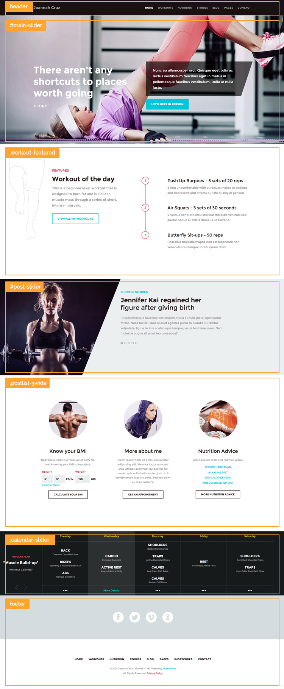
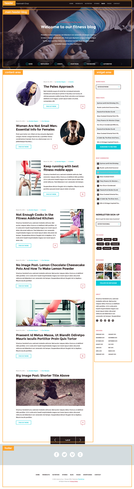
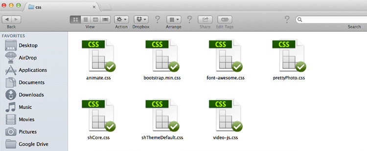
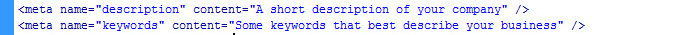

Thanks for purchasing this template, in this way supporting our efforts of bringing premium quality design and coding to you. This file contains general usage terms but also some useful information about the files included in the archive. If you have any questions about the theme please feel free to submit a ticket in our help desk. We would love to hep you.
The basic structure of the index page where you can find the visual representation of the HTML structure.
The basic structure of the blog page together with the visual representation of the HTML structure.
On the CSS side we load the standard Bootstrap files:
In Shape is built on Bootstrap, one of the most popular front-end framework for developing responsive, mobile first projects on the web. It makes front-end web development faster and easier. It's made for folks of all skill levels, devices of all shapes, and projects of all sizes. More about how Bootstrap's CSS works can be found here: http://getbootstrap.com/css/
In the root folder of the file you’ll find a sendmail.php file. This file takes care of the contact form from the contact us page. Even if the verifications of the form is made by js, this file will not work if you are not uploading it on your server. It needs the PHP server from your host in order to run.
You need to change 2 things before you upload it on your server: the name of your blog, and the email you want the contact form to be sent to. To do this modifications, open the sendmail.php and edit lines 5 and 6 from the file.
If you want to add another input field in the html file, you don’t need to edit the sendmail.php at all, just open the html page where the form is, add another input and if you want that input to be a mandatory field, you have to add the css=”required”. Note that this new input has to have name=”[example]“ and id=”[example]“
In order to improve your search engine ranking, and thus enable your web site to appear among search results, please don’t forget to change the description and keywords with your own.
As a best practice, the keywords from the meta tag are words that you should use in the texts from the page.
PSD Files
We’ve included all the psd files designed for the template and used to create the HTML. This files are usually used to create proposals for clients or for modifying different parts of the HTML template. You may see different bllured images in the PSD files. The reason why this is happening is that we are not allowed to redistribute these images. We used them for demo purposes only and they need to be changed with your own.
Fonts
We’ve used an open font in some of the titles and paragraphs:
- Montserrat
Once again, thank you so much for purchasing this template. As we said at the beginning, we'd be glad to help you if you have any questions relating to this template, please submit a ticket in our help desk. We would love to help you.
ThemeFuse